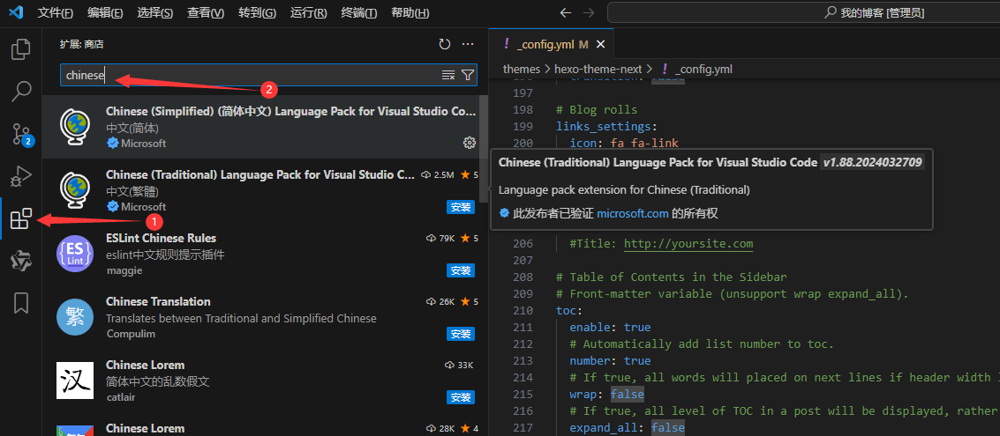
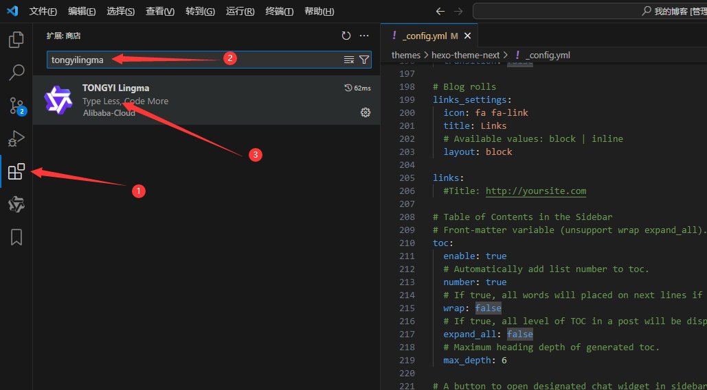
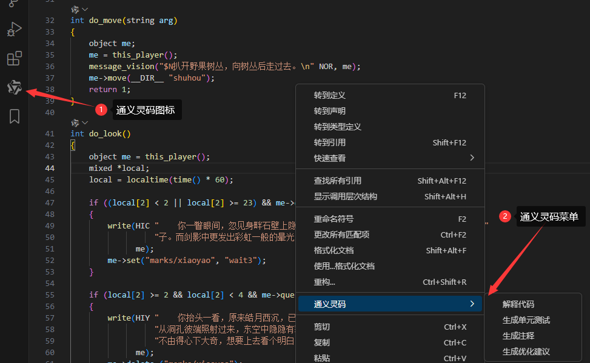
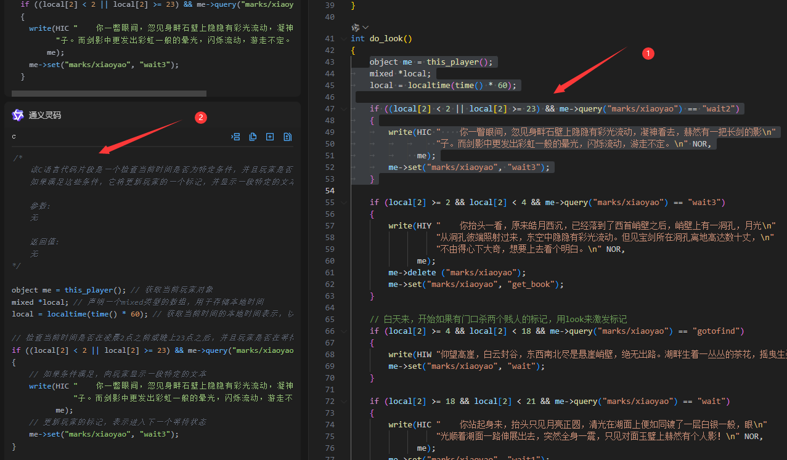

用AI看懂Lpc和Lua代码(deepseek篇)
首先需要下载一个代码工具，这里以vscode为例。
vscode官网：Visual Studio Code - 代码编辑。
vscode中文插件：Chinese (Simplified)，操作如下：

重启vscode后界面变中文，点开扩展（上图1），在图2位置输入tongyilingma

根据提示去阿里注册账号后，vscode左边框会出现通义灵码图标，右键会出现通义灵码菜单

现在我们来看生成注释的作用,选择自己需要的代码，右键通义灵码–生成注释

如果他的注释你还是无法理解，你可以让他给你解释。